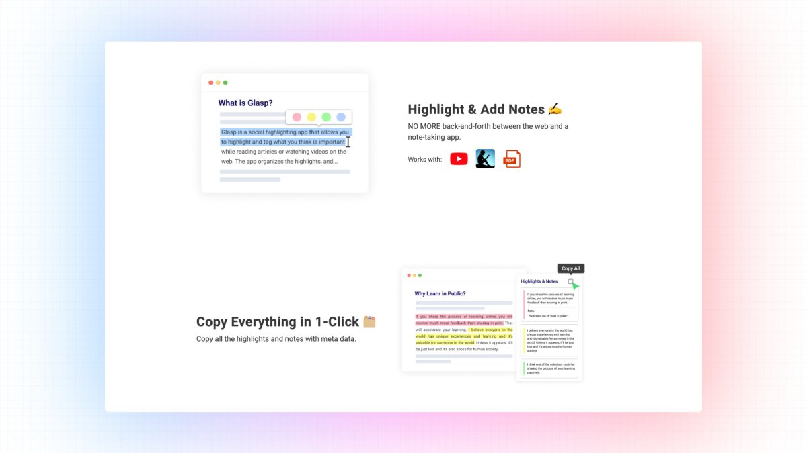
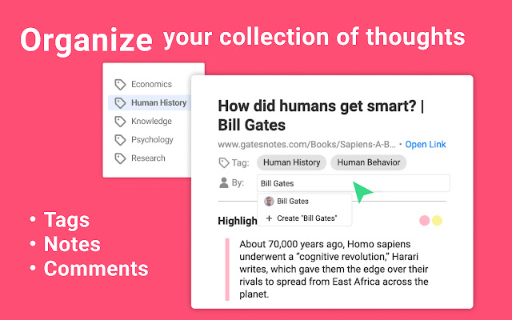
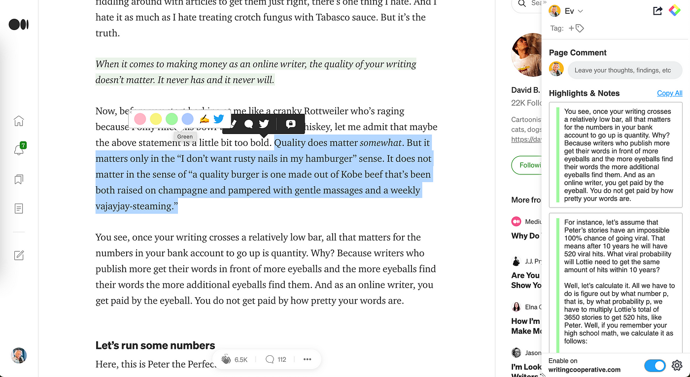

Introduction
The internet is a vast repository of knowledge, filled with ideas and insights that can help people grow and learn. However, with so much information available, it can be overwhelming to keep track of it all.
This is where Glasp comes in. Glasp is a social web highlighter that allows people to easily highlight and organize quotes and ideas from the web without having to switch back and forth between screens.
In this article, we will cover everything you need to know about Glasp, from its features and benefits to how to use it effectively.
What is Glasp?
Glasp is a free browser extension-based social web highlighter that lets you quickly capture online content with colored highlighting options.
The highlights are automatically curated to your Glasp homepage, where you can tag, search for, link to, and share them on a variety of other platforms, including Twitter, Teams, and Slack. With Glasp, you can leave your digital legacy for humanity, while working for yourself.
The goal of Glasp is to democratize access to other people’s learning and experiences that they have collected throughout their lives as a utilitarian legacy.
Why Use Glasp?
Glasp is an excellent tool for anyone who wants to curate their digital legacy and democratize access to other people's learning and experiences. By using Glasp, you can create a lasting impact and become a knowledge curator. Here are some of the benefits of using Glasp:
- Save Time: With Glasp, you can easily highlight and organize online content without switching back and forth between screens.
- Stay Organized: Glasp lets you organize your highlights by tags and categories, making it easy to find what you're looking for.
- Share with Others: Glasp allows you to share your highlights with others, so you can connect with like-minded people and discover more content.
- Leave a Legacy: By using Glasp, you can leave a digital legacy for humanity and democratize access to your learning and experiences.
Getting Started with Glasp
A. Installation
To get started with Glasp, you need to install the Glasp browser extension. Glasp currently supports Google Chrome and Mozilla Firefox. To install Glasp, follow these steps:
- Go to the Glasp website https://glasp.co/.
- Click on the "Install for Free" button.
- Select your browser (Google Chrome or Mozilla Firefox).
- Click on "Add to [Browser Name].
- Follow the prompts to complete the installation.
B. Setting Up Your Account
After installing the Glasp browser extension, you need to set up your Glasp account. To set up your account, follow these steps:
- Click on the Glasp icon in your browser toolbar.
- Click on the "Sign up" button.
- Enter your email address and create a password.
- Click on "Sign up."
- You will receive an email with a verification link. Click on the link and activate your login.
Highlighting and Organizing Content with Glasp
Glasp allows you to highlight and organize web content quickly and efficiently.
A. Highlighting Web Content with Glasp
To highlight web content with Glasp, follow these steps:
- Open the webpage you want to highlight.
- Click on the Glasp icon in your browser's toolbar.
- Use your mouse to select the text you want to highlight.
- Choose a color for your highlight.
- Add a note or tag to your highlight (optional).
- Click on the "Save" button.

B. Organizing Your Highlights on Glasp
Once you have highlighted content with Glasp, you can organize it on your Glasp homepage. Follow these steps to organize your highlights:
- Click on the Glasp icon in your browser's toolbar.
- Click on the "My Highlights" button.
- Use the filters on the left-hand side to sort your highlights by color, date, or tag.
C. Searching and Filtering Highlights on Glasp
As a platform that allows users to collaborate on documents and manage their workflow, one of the features of Glasp is the ability to search and filter highlights.
To search for highlights on Glasp, users can use the search bar located at the top of the page. They can type in keywords or phrases related to the highlights they are looking for and hit enter. Glasp will then display a list of all the highlights that match the search criteria.
To filter highlights on Glasp, users can use the filter bar located on the left-hand side of the page. They can filter by author, color, date, document, and tag. For example, if a user wants to see all highlights created by a specific author, they can select the author's name from the filter options.
Additionally, users can combine search and filter options to narrow down their results even further. For example, if a user wants to see all highlights created by a specific author in a specific document, they can select both the author's name and the document from the filter options and then perform a search.
When a user finds the highlight they are looking for, they can click on it to view the associated text. They can also edit or delete the highlight if necessary.
Glasp offers robust search and filtering capabilities for highlights, making it easy for users to find and manage their annotations in a collaborative document workflow.
Sharing and Collaborating on Glasp
A. Glasp Homepage
The Glasp homepage is where you can view all of your highlights and collections.
From here, you can search for specific highlights using keywords or tags, organize
your highlights into collections, and share your highlights on social media.
B. Collections
Collections are groups of highlights that are related to a particular topic or theme.
You can create as many collections as you like, and add as many highlights to each collection as you like.
You can also share collections with others by sending them the collection link.
C. Tags
Tags are keywords that you can add to your highlights to help you organize and search for them later.
You can add as many tags to a highlight as you like, and you can also search for highlights using tags.
D. Sharing Your Highlights
One of the great things about Glasp is that you can easily share your highlights with others.
To share a highlight, click on the “Share” button next to the highlight. You can then choose to share your highlight on Twitter, Teams, Slack, or other social media platforms.
You can also follow other Glasp users and see their highlights in your feed. To follow a user, simply click on their profile and click on the “Follow” button.
E. Glasp for Teams
Glasp for Teams is a collaboration tool that allows teams to share and organize knowledge across their organization.
With Glasp for Teams, you can create a shared knowledge base, collaborate on highlights and collections, and share knowledge with your entire team.
Exploring and Discovering New Content on Glasp
A. Discovering Content on the Glasp Website
To discover new content on Glasp, follow these steps:
- Log in to your Glasp account.
- Type your keywords or topics of interest in the search bar.
- Click on the "Search" button.
Glasp will display all the notes, tags, and other related content related to your search query.
You can further refine your search by using the filters provided on the left side of the search results page.
B. Following Other Glasp Users
Another way to discover new content on Glasp is by following other Glasp users. Following a user means that you will receive updates on their activities on the platform, such as new notes, tags, and highlights.
To follow a user on Glasp, follow these steps:
- Log in to your Glasp account.
- Search for the user you want to follow by typing their name in the search bar.
- Click on the user's profile.
- Click on the "Follow" button on their profile page.

Glasp with Other Note-Taking Apps
A. Glasp with Obsidian
Obsidian is a note-taking app that allows users to create and organize their notes in a hierarchical structure. Glasp can be integrated with Obsidian through the use of a plugin called "Glasp for Obsidian."
This plugin allows users to import their Glasp notes into Obsidian and vice versa. To integrate Glasp with Obsidian, follow these steps:
- Install the "Glasp for Obsidian" plugin in Obsidian.
- Log in to your Glasp account and authorize the plugin.
- Click on the "Import from Glasp" button in Obsidian to import your Glasp notes into Obsidian.
- Click on the "Export to Glasp" button in Obsidian to export your Obsidian notes to Glasp.
Glasp will display all the notes, tags, and other related content related to your search query.
You can further refine your search by using the filters provided on the left side of the search results page.
B. Glasp with Notion
Notion is a productivity tool that allows users to create and organize their notes, tasks, and projects. Glasp can be integrated with Notion through the use of a third-party service called "Zapier."
This service allows users to automate the process of importing and exporting notes between Glasp and Notion. To integrate Glasp with Notion, follow these steps:
- Sign up for a Zapier account.
- Create a new "Zap" in Zapier.
- Select Glasp as the trigger app and Notion as the action app.
- Choose the import/export settings for your notes.
- Test the integration to ensure it's working correctly.
C. Glasp with Roam Research
Roam Research is a note-taking app that allows users to create and organize their notes in a non-linear way. Glasp can be integrated with Roam Research through the use of a third-party service called "Zapier."
This service allows users to automate the process of importing and exporting notes between Glasp and Roam Research. To integrate Glasp with Roam Research, follow these steps:
- Sign up for a Zapier account.
- Create a new "Zap" in Zapier.
- Select Glasp as the trigger app and Roam Research as the action app.
- Choose the import/export settings for your notes.
- Test the integration to ensure it's working correctly.
D. Glasp with Readwise
Readwise is a service that allows users to import and organize their highlights and annotations from books, articles, and other sources. Glasp can be integrated with Readwise through the use of a third-party service called "Zapier."
This service allows users to automate the process of importing and exporting notes between Glasp and Readwise. To integrate Glasp with Readwise, follow these steps:
- Sign up for a Zapier account.
- Create a new "Zap" in Zapier.
- Select Glasp as the trigger app and Readwise as the action app.
- Choose the import/export settings for your notes.
- Test the integration to ensure it's working correctly.
Once the integration is set up, any notes, highlights, or annotations saved in Readwise will be automatically imported into Glasp. This allows users to keep all their notes and highlights organized in one place and easily searchable. Users can also export their Glasp notes to Readwise to keep track of their reading progress and review their notes and highlights in one place.
E. Glasp with Atomic Interest Graph
Atomic Interest Graph is a service that uses artificial intelligence to analyze a user's notes and interests and provides personalized recommendations for books, articles, and other resources that may be of interest. Glasp can be integrated with Atomic Interest Graph through an API (Application Programming Interface).
To integrate Glasp with Atomic Interest Graph, users need to obtain an API key from Atomic Interest Graph and use it to connect their Glasp account. Once the integration is set up, Atomic Interest Graph will automatically analyze the user's notes and provide personalized recommendations for related content.
This integration is useful for users who want to discover new resources related to their interests without having to spend time searching for them. The personalized recommendations from Atomic Interest Graph can save time and provide new insights and perspectives on the user's interests.
Monetization Plan
Glasp currently offers a free plan with basic features, as well as a paid plan with advanced features. The paid plan is priced at $5 per month or $50 per year and includes features such as unlimited notes, advanced search, and integrations with other apps. Glasp also offers a team plan for businesses and organizations that require collaboration and sharing features.
In addition to the paid plans, Glasp may also generate revenue through affiliate partnerships with other note-taking apps and services. This means that Glasp may receive a commission for any referrals or purchases made through their affiliate links. Glasp may also explore other monetization strategies in the future, such as advertising or premium content.
Conclusion
Glasp is an excellent social web highlighter that provides a free and easy way to organize and share your online discoveries.
It's an ideal tool for people who want to save their research and discoveries online and share them with others. With its unique
highlighting feature and curation tools, Glasp is an excellent solution for people who want to create their digital legacy.
In summary, Glasp is an excellent tool for anyone who wants to save and organize their online discoveries and share them with others. It's a great way to create your digital legacy and contribute to the collective knowledge of humanity.
Give Glasp a try today and start highlighting, saving, and sharing your knowledge with others. 🤩